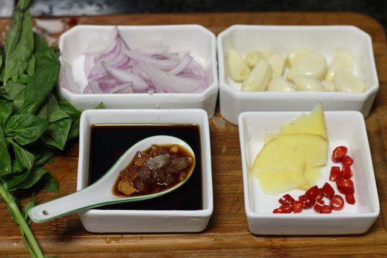

A recipe for Braised Prawns
Braised prawn is a famous delicacy with bright red color, elegant flavor, tender and slightly sweet taste, and oily and palatable taste.It USES the unique cooking techniques of shandong cuisine, fresh, sweet and salty four flavors complement each other, with an endless aftertaste.
The material prepared
Shrimp 500 grams, shallot white 15 grams, ginger 10 grams, garlic 2, sugar 15 grams, light soy sauce 20 grams, tomato sauce 35 grams, cooking wine 20 grams, salt 1 gram.
Production steps

Wash the shrimp and remove the shrimp line.

Slice the scallion, ginger and garlic.
Put the oil into the wok. When the oil is hot, add the shrimp and stir fry.
Stir-fry the prepared scallions, ginger and garlic until fragrant.
Pour tomato sauce, light soy sauce, sugar, cooking wine, salt.Simmer until fragrant.
Dish out.A braised prawn dish is ready!